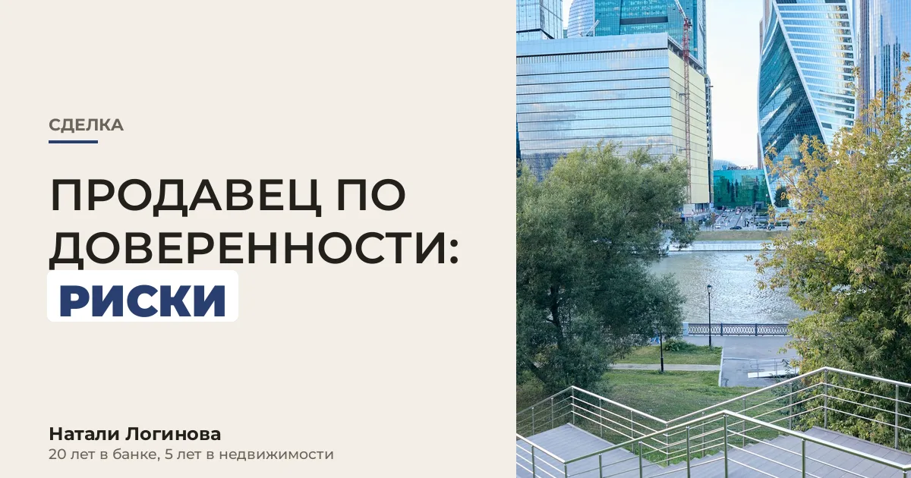

Сделки по доверенности у меня бывают часто. Собственник живёт в другом городе или за границей, покупатель в командировке, а квартиру нужно брать сейчас. Доверенность это нормальный рабочий инструмент. И она же любимый инструмент мошенников. Разберу оба случая: когда по доверенности продают вам и когда вы покупаете через своего представителя.
| Ситуация | Главный риск | Что делать |
|---|---|---|
| Продавец действует по доверенности | Доверенность отменена, поддельная или собственника уже нет в живых | Проверка в реестре, видеозвонок с собственником, деньги на его счёт |
| Вы покупаете через своего представителя | Представитель выходит за рамки полномочий | Узкая доверенность под конкретную квартиру и сумму |
Деньги получает собственник. Самые надёжные способы: аккредитив на имя собственника или сервис безопасных расчётов банка. Получателем указывается именно собственник, деньги раскрываются после регистрации перехода права. Наличные представителю продавца не передаю никогда и клиентам не советую.
Доверенность оформляется у нотариуса, нужен ваш паспорт и данные представителя. Росреестр принимает документы от представителя по нотариальной доверенности.
Делайте доверенность узкой:
Подписание ипотеки через представителя большинство банков не принимает: кредитный договор заёмщик подписывает сам. Если покупаете в ипотеку, уточните это у банка до оформления доверенности.
Если доверенность окажется поддельной или отменённой, сделку признают недействительной и квартиру вернут собственнику. Вернуть деньги придётся через суд с того, кто их получил. Отсюда моё правило: деньги всегда идут на счёт собственника, а собственника я вижу лично или по видео.
Если вы продавец и думаете продать по доверенности, порядок и нюансы я разобрала в статье Доверенность на продажу квартиры.
Продавец действует по доверенности, и вам неспокойно? Пришлите мне копию доверенности и выписку из ЕГРН. Я проверю полномочия, реестр и подскажу, как выстроить расчёты. Работаю в Москве и Петербурге.
Написать можно в мою личку в Telegram: проверить доверенность продавца. Кнопка откроет чат со мной с готовым сообщением про эту статью, его останется только отправить.
Для сделки с квартирой и подачи документов в Росреестр нужна нотариальная доверенность.
Да, на сайте Федеральной нотариальной палаты в разделе реестра доверенностей. Нужны номер в реестре нотариуса, дата и данные нотариуса.
Отмена после регистрации перехода права сделку не отменяет. Опасна отмена до сделки, поэтому реестр проверяют в день подписания.
Нет, если доверенность в порядке. Но связаться с ним перед сделкой нужно обязательно.
Проверено 15 октября 2026.
Проверить доверенность продавца: разбор в Telegram.